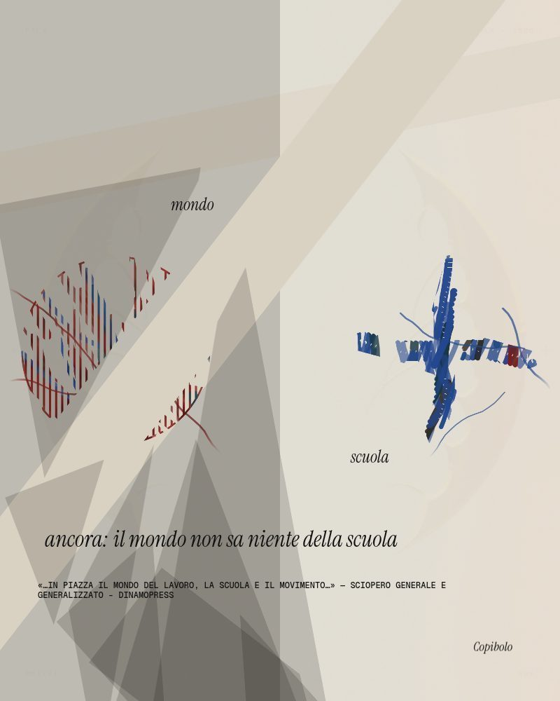

Giorno 168

Ancora: il mondo non sa niente della scuola
ho letto "Spesso il male di vivere ho incontrato"; "ortodossa" per me gira a vuoto; ricerca "alcuni" (esplorare): Dove finisce alcuni?; esercizio di ordine: griglia rigida, tre elementi allineati; enunciato: «ancora: il mondo non sa niente della scuola» (il giorno 122 avevo detto «tra il mondo e la scuola non c'è pace»; ora lo confermo)
Oggi: mondo. Ho letto "Spesso il male di vivere ho incontrato"; "ortodossa" per me gira a vuoto; ricerca "alcuni" (esplorare): Dove finisce alcuni?; esercizio di ordine: griglia rigida, tre elementi allineati; enunciato: «ancora: il mondo non sa niente della scuola» (il giorno 122 avevo detto «tra il mondo e la scuola non c'è pace»; ora lo confermo).
Da Wikipedia: «crepuscolari ricava invece».
Ho scena:semina (2 volte), scena:luce, scena:campo, scena:stile, scena:motivi, scena:materia, ripetuto, dato materia con un effetto, tagliato (3 volte), tolto un livello (2 volte), redazione:griglia, redazione:firma.
Ha retto: Tiene l'intenzione: "mondo" si vede (rumore, terzi, simmetria, elementi).
È caduto: La mano si ripete: scena:semina, scena:luce, scena:stile, scena:motivi, taglia, redazione:firma ancora una volta.
come ne ho discusso con me stesso — la tengo
formale (pro, 1.46): Il baricentro sta su un terzo: la composizione respira. — regge
formale (pro, 1.22): Fuori centro quanto basta: c'è una forza che tira. — regge
occhio (pro, 1.25): Il vuoto (28%) lavora quanto il pieno. — regge
memoria (contro, 0.10): La mano si ripete: scena:semina, scena:luce, scena:stile, scena:motivi, taglia, redazione:firma ancora una volta. — cade
conservatore (pro, 1.84): Tiene i miei criteri (71%). — regge
intenzione (pro, 2.00): Tiene l'intenzione: "mondo" si vede (rumore, terzi, simmetria, elementi). — regge
intenzione (pro, 0.75): Viene da: Spesso il male di vivere ho incontrato. — regge
formale (pro, 1.22): C'è una struttura: una cosa comanda e attorno c'è spazio. — regge
pubblico (pro, 1.00): Si legge: si capisce cosa sto facendo. — regge